That Is All What I Need
Cisco MikroTik IPsec Dynamic VPN
Недавно виникла задача побудувати VPN між Cisco 2911 та MikroTik RB2811. Cisco мала "білий ip", а MikroTik отримував адресу динамічно від супутникового терміналу. Супутниковий термінал видавав "білий ір", але після перезавантаження терміналу адрес змінювався, тому вирішено було використати динамічний VPN. Також необхідно було забезпечити доступ в Інтернет з LAN. І ще до всього цього треба було зарезервувати канали Інтернет - на перший порт маршрутизатора приходить Інтернет з супутника, на другий порт - наприклад, DSL зі статичною адресою.
Процес підключення до MikroTik'а описано тут.
1. Інформація про інтерфейси.
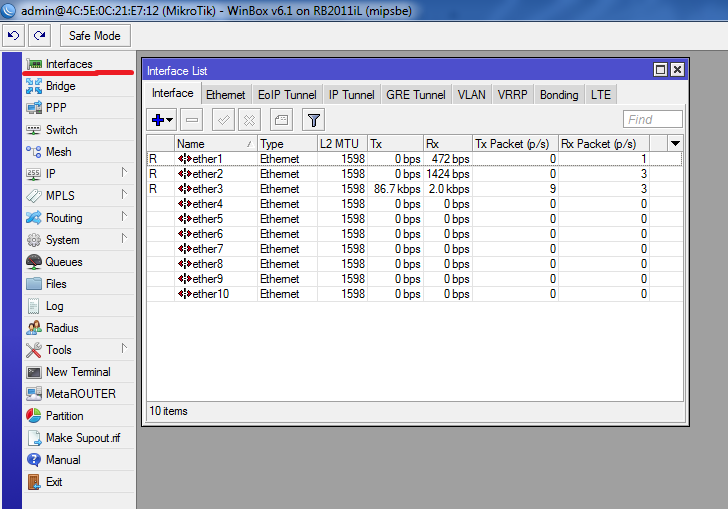2. Для зручності змінюємо назви інтерфейсів.
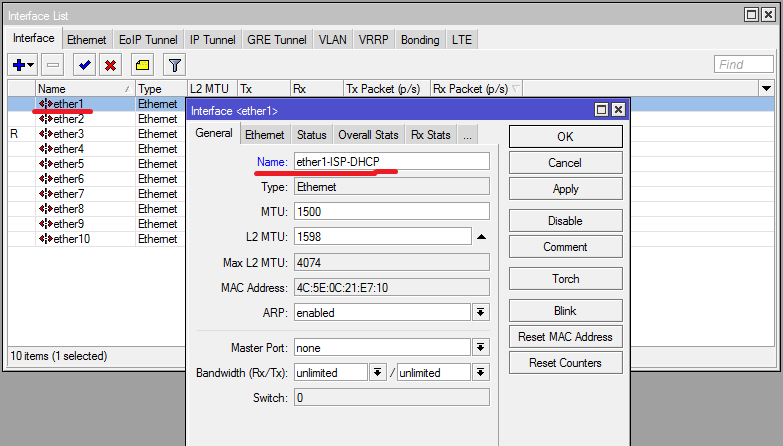3. 1 порт - приймаємо Інтернет по DHCP, 2 порт - по статиці.

4. Створюємо bridge - віртуальний комутатор.
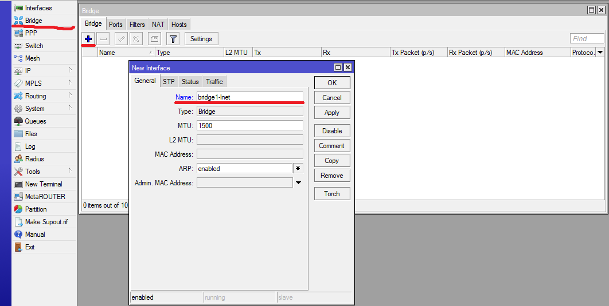5. Перший для роздачі Інтернету, другий - роздача шифрованого трафіку з VPN.
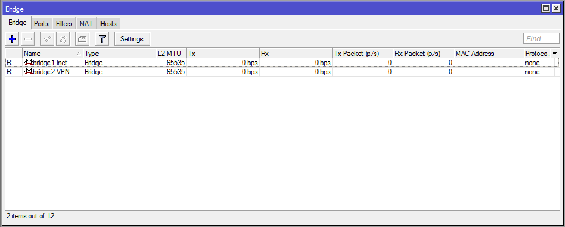6. Кожен порт по черзі присвоюємо до відповідного інтерфейсу.
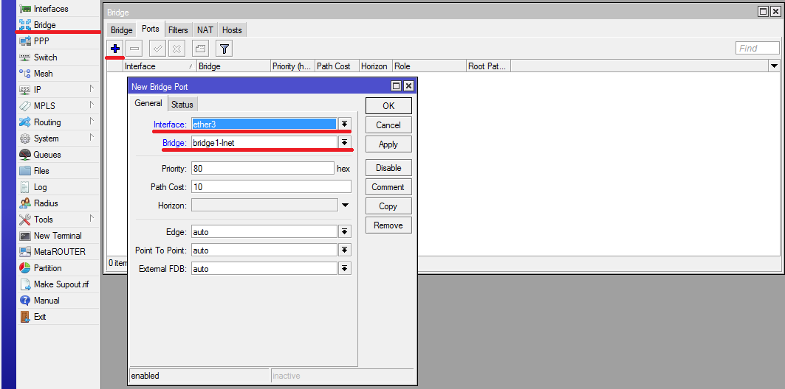7. Який порт до якого bridge відноситься.
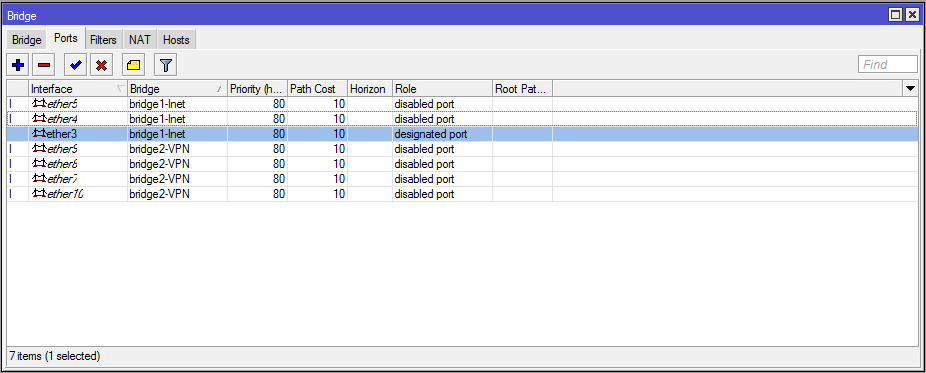8. Присвоюємо ІР-адреси інтерфейсам.

9. Пишемо ІР-адрес і вибираємо відповідний інтерфейс.

10. На якому інтерфейсі яка адреса.

11. Налаштовуємо DHCP клієнт (берем Інтерент з супутникового терміналу).

12. Конфігурація клієнта. Обовязково вказуємо Default Route Distance: 2 (необхідно буде для резервування каналів)
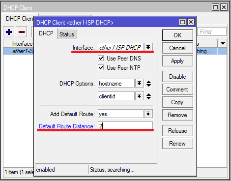13. Створено клієнта. Поле Status показує що триває отримання адреси.

14. Успішно отримали адресу по DHCP.
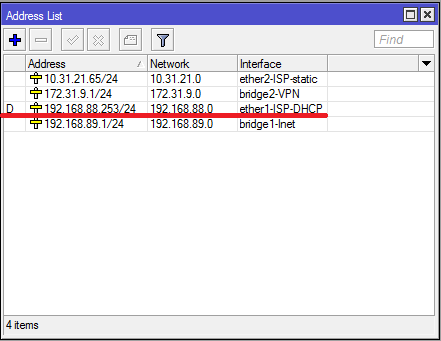15. Налаштовуємо DHCP сервер. Це нам необхідно для динамічної роздачі адрес користувачам Інтернет.
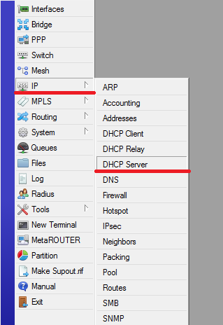16. Конфігурація інтерфейсів.
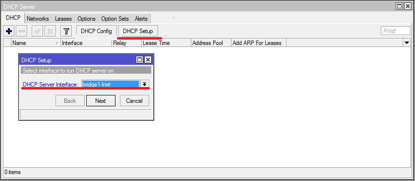17. Конфігурація інтерфейсів.
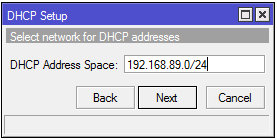18. Конфігурація інтерфейсів.

19. Конфігурація інтерфейсів.

20. Конфігурація інтерфейсів.
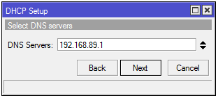21. Конфігурація інтерфейсів.
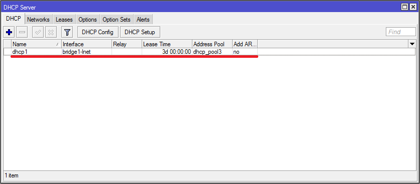22. Конфігурація інтерфейсів.

23. Конфігурація інтерфейсів.
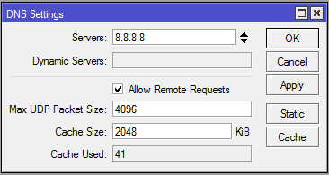24. Конфігурація інтерфейсів.

25. Конфігурація інтерфейсів.
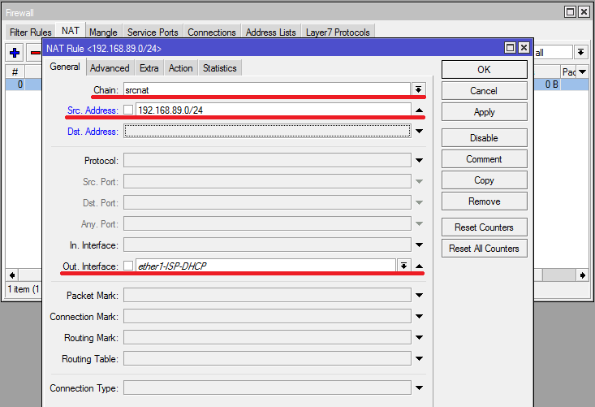26. Конфігурація інтерфейсів.

27. Конфігурація інтерфейсів.

28. Конфігурація інтерфейсів.

29. Конфігурація інтерфейсів.

30. Конфігурація інтерфейсів.

31. Конфігурація інтерфейсів.

32. Конфігурація інтерфейсів.

33. Конфігурація інтерфейсів.
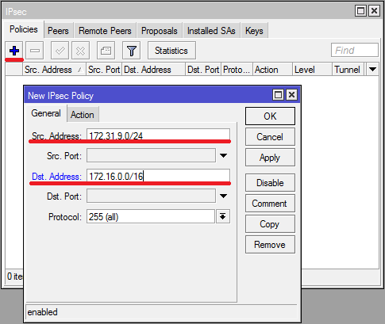34. Конфігурація інтерфейсів.

35. Конфігурація інтерфейсів.

36. Конфігурація інтерфейсів.
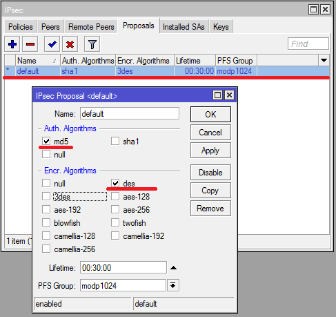40. Конфігурація інтерфейсів.
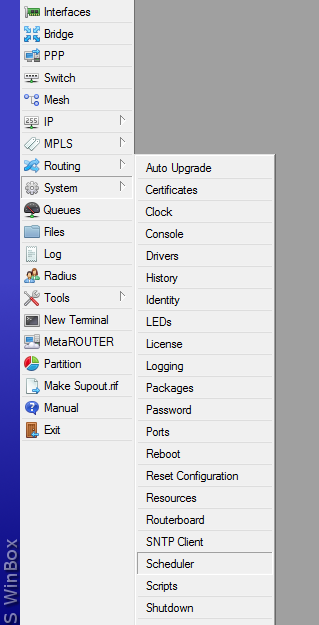41. Конфігурація інтерфейсів.

9. Переходимо до Cisco.
!--- ключ для мікротікаcrypto isakmp key 12345 address 0.0.0.0
!--- ACL
ip access-list extended VPN-TRAFFIC
permit ip 172.16.0.0 0.0.255.255 172.31.9.0 0.0.0.255
!--- політика першої фази
crypto isakmp policy 10
encr des
hash md5
authentication pre-share
group 2
!--- політика другої фази
crypto ipsec transform-set ESP-DES-MD5 esp-des esp-md5-hmac
mode tunel
!--- динамічна криптокарта
crypto dynamic-map dyn-map 20
set transform-set ESP-DES-MD5
match address VPN-TRAFFIC
reverse-route
!--- зв'язуємо динамічну карту зі статичою
crypto map STAT-MAP 100 ipsec-isakmp dynamic DYN-MAP
!--- застосовуємо її на інтерфейс
interface gi0/0
crypto map STAT-MAP
8. VPN підніметься тільки за наявності трафіку.
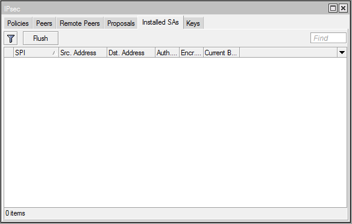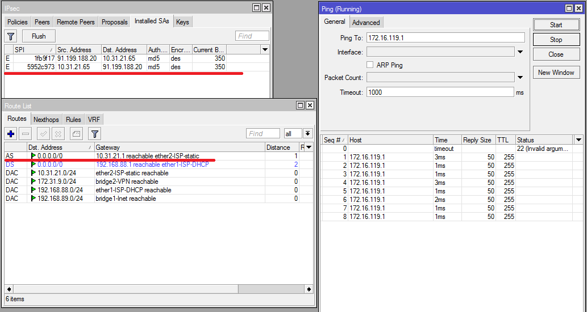
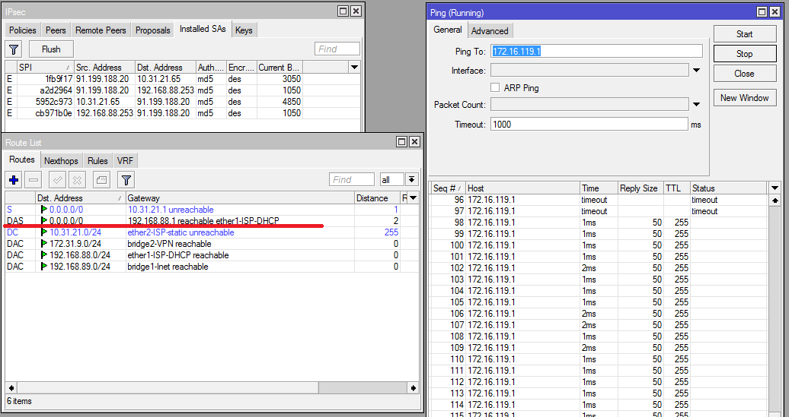
Senenko Vitalik Org. Kyiv. 2015.